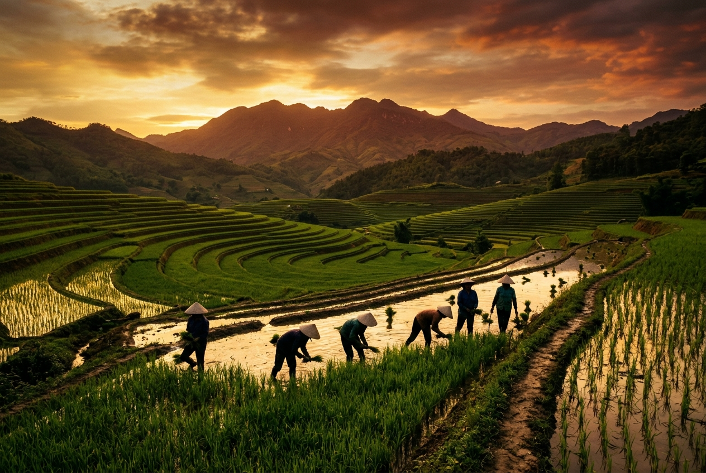

Vai trò của đại đoàn kết toàn dân tộc
🎯 Mục tiêu: Hiểu tại sao Hồ Chí Minh coi đại đoàn kết dân tộc là vấn đề có ý nghĩa chiến lược, quyết định thành công của cách mạng.
📖 Trích dẫn kinh điển
"Đoàn kết, đoàn kết, đại đoàn kết.
Thành công, thành công, đại thành công."
— Hồ Chí Minh | Toàn tập, tập 13, tr.119
1. Đại đoàn kết toàn dân tộc là vấn đề có ý nghĩa chiến lược
Hồ Chí Minh khẳng định đại đoàn kết không phải là một thủ đoạn chính trị nhất thời, mà là một chiến lược lâu dài, nhất quán trong suốt quá trình cách mạng. Nó quyết định sự sống còn của dân tộc và sự thành bại của mọi công cuộc cách mạng. Kẻ thù lớn nhất của cách mạng không chỉ là đế quốc, phong kiến, mà còn là sự chia rẽ.
2. Đại đoàn kết là mục tiêu, nhiệm vụ hàng đầu của cách mạng
Đoàn kết là mục tiêu
Không chỉ là phương tiện để giành độc lập, mà bản thân khối đại đoàn kết bền vững chính là một mục tiêu phải đạt được để xây dựng xã hội mới vững mạnh.
Đoàn kết là nhiệm vụ
Phải được quán triệt trong mọi đường lối, chủ trương của Đảng. Đảng phải có nhiệm vụ thức tỉnh, tập hợp, đoàn kết quần chúng tạo thành sức mạnh vô địch.
psychology Câu hỏi phản tư
Lực lượng và điều kiện đại đoàn kết
🎯 Mục tiêu: Xác định rõ chủ thể, nền tảng của khối đại đoàn kết và những điều kiện bắt buộc để xây dựng khối đại đoàn kết.
1. Lực lượng đại đoàn kết toàn dân tộc
Chủ thể: Toàn dân
"Dân" bao gồm mọi người Việt Nam yêu nước, không phân biệt dân tộc, tôn giáo, giai cấp, giới tính, lứa tuổi. Bất cứ ai có lòng yêu nước đều được tập hợp vào khối đại đoàn kết.
Nền tảng: Liên minh Công - Nông - Trí thức
Đại đoàn kết rất rộng rãi, nhưng phải có cốt lõi vững chắc. Đó là liên minh giữa giai cấp công nhân, giai cấp nông dân và tầng lớp trí thức, dưới sự lãnh đạo của Đảng.
2. Điều kiện để xây dựng khối đại đoàn kết
- done Phải kế thừa truyền thống yêu nước, nhân nghĩa: Đây là cội nguồn sức mạnh ngàn đời của dân tộc Việt Nam.
- done Phải có lòng khoan dung, độ lượng: Hồ Chí Minh nhấn mạnh: "Năm ngón tay có ngón ngắn ngón dài, nhưng ngắn dài đều họp nhau lại nơi bàn tay...". Phải xóa bỏ thành kiến, khoan dung với những người từng lầm đường lạc lối nhưng nay đã hối cải.
- done Phải có Đảng Cộng sản vững mạnh lãnh đạo: Đây là điều kiện tiên quyết để khối đại đoàn kết có định hướng đúng đắn, không bị phân tán, chệch hướng.
Hình thức tổ chức: Mặt trận dân tộc thống nhất
🎯 Mục tiêu: Hiểu rõ cách thức tổ chức và các nguyên tắc hoạt động của Mặt trận dân tộc thống nhất.
1. Mặt trận Dân tộc Thống nhất
Đại đoàn kết toàn dân tộc không thể chỉ nằm trong tư tưởng mà phải được quy tụ vào một tổ chức thực tế. Đó là Mặt trận dân tộc thống nhất (nay là Mặt trận Tổ quốc Việt Nam). Mặt trận là nơi quy tụ mọi tổ chức và cá nhân yêu nước, tập hợp sức mạnh của toàn dân tộc.
2. Nguyên tắc hoạt động của Mặt trận
Nền tảng Liên minh
Xây dựng trên nền tảng liên minh công nhân - nông dân - trí thức, dưới sự lãnh đạo của Đảng (Đảng vừa là thành viên, vừa là lực lượng lãnh đạo).
Hiệp thương dân chủ
Mọi vấn đề đều được bàn bạc, thỏa thuận dân chủ, tôn trọng ý kiến các thành viên, không áp đặt, mệnh lệnh.
Đoàn kết lâu dài, chặt chẽ
Đoàn kết rộng rãi, chân thành; tôn trọng những điểm khác biệt không trái với lợi ích chung của dân tộc.
Tự phê bình và phê bình
Đoàn kết gắn liền với đấu tranh. Phê bình và tự phê bình chân thành để giải quyết mâu thuẫn nội bộ, giúp nhau cùng tiến bộ.
Sự cần thiết và lực lượng đoàn kết quốc tế
🎯 Mục tiêu: Lý giải nguyên nhân vì sao cách mạng Việt Nam phải gắn liền với phong trào cách mạng thế giới.
1. Sự cần thiết của đoàn kết quốc tế
Hồ Chí Minh khẳng định: Cách mạng Việt Nam là một bộ phận của cách mạng thế giới. Đoàn kết quốc tế nhằm kết hợp sức mạnh dân tộc với sức mạnh thời đại, tạo sức mạnh tổng hợp để đánh thắng chủ nghĩa đế quốc. Chỉ có đoàn kết quốc tế mới tranh thủ được sự đồng tình, ủng hộ của thế giới, đồng thời đóng góp vào sự nghiệp hòa bình, dân chủ và tiến bộ của nhân loại.
2. Lực lượng đoàn kết quốc tế
- Phong trào cộng sản và công nhân quốc tế: Đây là lực lượng nòng cốt, những người cùng chung lý tưởng giải phóng giai cấp, giải phóng con người.
- Phong trào đấu tranh giải phóng dân tộc: Các dân tộc thuộc địa bị áp bức cùng chung kẻ thù là chủ nghĩa thực dân, đế quốc.
- Các lực lượng tiến bộ, yêu chuộng hòa bình, dân chủ: Bao gồm nhân dân tiến bộ trên toàn thế giới, kể cả nhân dân ở các nước tư bản, đế quốc.
Nguyên tắc đoàn kết quốc tế
🎯 Mục tiêu: Nắm vững các nguyên tắc cơ bản trong đường lối đối ngoại và đoàn kết quốc tế của Hồ Chí Minh.
1. Đoàn kết trên cơ sở thống nhất mục tiêu và lợi ích, có lý có tình
Đoàn kết không phải là sự phụ thuộc một chiều. Nó dựa trên lợi ích chung là độc lập, tự do, hòa bình và tiến bộ. Giải quyết các bất đồng trong phong trào quốc tế bằng thương lượng trên nền tảng chủ nghĩa Mác-Lênin, tôn trọng lẫn nhau, "có lý có tình".
2. Độc lập tự chủ, tự lực cánh sinh
Hồ Chí Minh luôn nhấn mạnh: "Một dân tộc không tự lực cánh sinh mà cứ ngồi chờ dân tộc khác giúp đỡ thì không xứng đáng được độc lập". Tranh thủ sự ủng hộ quốc tế là cần thiết, nhưng cốt lõi vẫn là sức mạnh nội lực của dân tộc. Độc lập tự chủ không đồng nghĩa với cô lập, khép kín.
Câu hỏi phản tư
Vận dụng trong giai đoạn hiện nay
🎯 Mục tiêu: Liên hệ tư tưởng HCM về đại đoàn kết và đối ngoại vào công cuộc đổi mới và hội nhập quốc tế của Việt Nam hiện nay.
1. Xây dựng khối đại đoàn kết toàn dân tộc vững chắc
Tiếp tục củng cố liên minh công - nông - trí thức. Phát huy dân chủ XHCN, đảm bảo quyền làm chủ của nhân dân. Giải quyết hài hòa các quan hệ lợi ích trong xã hội, thu hẹp khoảng cách giàu nghèo, chăm lo đời sống vật chất và tinh thần cho nhân dân. Tôn trọng và phát huy vai trò của đồng bào các tôn giáo, đồng bào dân tộc thiểu số và kiều bào ở nước ngoài.
2. Kết hợp đại đoàn kết toàn dân tộc với đoàn kết quốc tế
Thực hiện đường lối đối ngoại độc lập, tự chủ, hòa bình, hợp tác và phát triển. Đa phương hóa, đa dạng hóa quan hệ quốc tế. "Việt Nam là bạn, là đối tác tin cậy và là thành viên có trách nhiệm của cộng đồng quốc tế". Triển khai đồng bộ 3 trụ cột: đối ngoại Đảng, ngoại giao Nhà nước và ngoại giao nhân dân.
Bạn đã hoàn thành 6 bài học!
Làm bài kiểm tra tổng kết Module 4 để nhận thành tích và +10 XP.
🤖 AI Trợ giảng — Module 4 HCM
Giáo trình Tư tưởng HCM 2021, Chương 4
🤖 AI HCM Module 4
Xin chào! Tôi sẵn sàng giải thích Module 4 — Đoàn kết Dân tộc và Quốc tế. Hỏi ngay!
💡 Câu hỏi gợi ý: